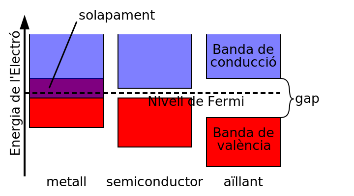
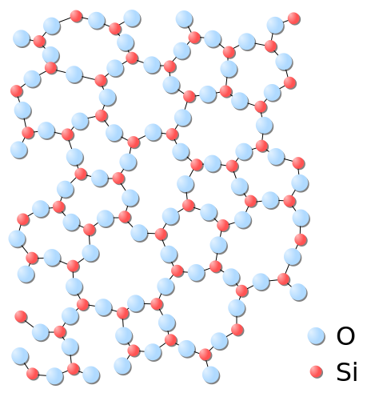

Sòlids#
Pàgina en desenvolupament
Encara estem treballant en aquest document.
Esperem oferir-vos properament el seu contingut.
Disculpeu les molèsties.
La majoria de materials que selecciona un enginyer son sòlids, per això ens centrarem en aquest tipus de materials. Com heu vist trobarem sòlids amorfs i sòlids cristal·lins.
Vidre |
Grafè |
|---|---|
|
|


Fixeu-vos en l’estructura del vidre. No es repeteix periòdicament. Per molt que a la nostra vida quotidiana diem cristall per anomenar el vidre, el vidre és un sòlid amorf, no cristal·lí. Els sòlids amorfs es poden considerar com a líquids amb una viscositat altíssima. Prova d’això son les deformacions observables a vidres de finestres centenàries de masies i esglésies: s’aprecia òpticament un engrossiment a la part inferior del vidre, que actua com a lent, deformant les imatges.
Quan el sòlid no és un únic cristall sinó un agregat de petits cristalls parlem de policristall. Aquests petits cristalls s’anomenen cristal·lites o grans cristal·lins, que poden tenir mides d’entre 1 i 2 micres fins a uns quants mil·límetres, fins-i-tot uns quants metres.

Estructures cristal·lines#
L’estudi d’aquestes estructures sempre ha fascinat als científics, ja que molts minerals presenten aquest tipus d’ordenació. El més sorprenent és que, donada la seva simetria, únicament existeixen 7 sistemes cristal·lins, que presenten només 14 models de xarxes tridimensionals invariants sota translacions, anomenades xarxes de Bravais.
Sistema cristal·lí |
Eixos |
Angles entre els eixos |
|---|---|---|
Cúbic |
a = b = c |
α = β = γ = 90° |
Tetragonal |
a = b ≠ c |
α = β = γ = 90° |
Ortoròmbic |
a ≠ b ≠ c ≠ a |
α = β = γ = 90° |
Hexagonal |
a = b ≠ c |
α = β = 90°; γ = 120º |
Trigonal (o romboèdric) |
a = b = c |
α = β = γ ≠ 90° |
Monoclínic |
a ≠ b ≠ c ≠ a |
α = γ = 90°; β ≠ 90° |
Triclínic |
a ≠ b ≠ c ≠ a |
α ≠ β ≠ γ (tots diferents de 90°) |
Cel·la cúbica simple |
Cel·la cúbica centrada al cos (BCC) |
Cel·la cúbica centrada a les cares (FCC) |
Cel·la tetragonal simple |
Cel·la tetragonal centrada en el cos |
|---|---|---|---|---|
|
|
|
|
|


Cel·la hexagonal |
Cel·la ortoròmbica simple |
Cel·la ortoròmbica centrada al cos |
Cel·la ortoròmbica centrada a les bases |
Cel·la ortoròmbica centrada a les cares |
|---|---|---|---|---|
|
|
|
|
|


Cel·la romboèdrica |
Cel·la monoclínica |
Cel·la monoclínica centrada a les bases |
Cel·la triclínica |
|---|---|---|---|
|
|
|
|


Ens centrarem en les xarxes de Bravais cúbiques (simple, BCC i FCC), tetragonals (simple i centrada en el cos) i hexagonal (a la qual normalment ens referirem com hexagonal compacta o HCP), ja que són les més típiques que trobarem, especialment als metalls. Són moltes les propietats que podrem deduir de l’estructura cristal·lina als metalls, com per exemple la seva mal·leabilitat i ductilitat, ja que poden reorganitzar-se al lliscar els àtoms entre sí mantenint la cohesió entre ells.
Cal ressaltar que un mateix compost pot presentar diferents estructures cristal·lines, en funció de paràmetres com ara la pressió o temperatura. Un exemple és el titani, que podem trobar amb ordenacions HCP i BCC, o el ferro, que trobarem amb estructures BCC i FCC.
Si un mateix compost es pot donar en diferents xarxes de Bravias implica la possibilitat d’un canvi de fase sense que es produeixi un canvi d’estat. Per exemple, el Fe β (estructura BCC) passa a Fe γ (estructura FCC) als 750 °C. Com veieu, tots dos són sòlids, però la temperatura es manté constant a 750 °C mentre es produeix el canvi de fase i tot el Fe β es reorganitza i es converteix en Fe γ. Com veieu, la natura és rica en sorpreses!
Més sorprenent és que als 1400 °C el Fe γ presenta un nou canvi de fase, a Fe δ, tornant a presentar una estructura BCC però amb un paràmetre de xarxa a (distància entre cel·les) diferent al Fe β.
Fixeu-vos que la cel·la hexagonal en realitat no és un hexàgon: aquest es forma amb 3 cel·les.
Aplicació als metalls#
Podem considerar l’estudi dels sòlids cristal·lins metàl·lics com un problema matemàtic d’empaquetament de boles sòlides. Aquest estudi és molt senzill a les estructures cúbiques.
Primer anem a veure quants àtoms caben a la cel·la unitat (N), suposant cada àtom com una bola sòlida amb un radi igual al radi atòmic, i la mida del costat d’aquesta cel·la (paràmetre de xarxa a):
CS |
FCC |
BCC |
|---|---|---|
|
|
|
\(\Large N=8\cdot \frac{1}{8}=1\) |
\(\Large N=8\cdot \frac{1}{8}+6\cdot \frac{1}{2}=4\) |
\(\Large N=8\cdot \frac{1}{8}+1\cdot 1=2\) |
\(\Large a=2\cdot r\) |
\(\Large a=\frac{4}{\sqrt{2}}\cdot r\) |
\(\Large a=\frac{4}{\sqrt{3}}\cdot r\) |
.svg)

.svg)
Per tant en una cel·la de volum \(a^3\) tenim N àtoms. Com cada mol té \(N_A\) (nombre d’Avogadro) àtoms i pesa en grams \(A\) (massa atòmica) podem fer una estimació de la densitat:
\(\rho = \Large \frac{N \cdot A}{a^3\cdot N_A}\)
Molt interessant és l’anomenat factor d’empaquetament (\(APF\)), que ens indica com de plena està la cel·la:
\(APF= \Large \frac{N \cdot V_{àtom}}{V_{cel·la}}\)
Als metalls, el \(APF\) de les cel·les FCC és el més eficient possible (0,74). Les cel·les BCC tenen un \(APF\) de 0.68 i les cel·les CS de 0.52. Els metalls que només tenen un enllaç de tipus metàl·lic s’empaqueten amb la màxima eficiència. Els que tenen un enllaç mixt, com el ferro, poden tenir cel·les amb un empaquetament inferior. Cap metall comú utilitzat a enginyeria té l’estructura CS, encara que aquesta es troba en materials ceràmics.
A l’estructura HCP, els metalls ideals tenen una relació \(c/a = 1,633\)que ens porta al mateix \(APF\) 0,74 de les cel·les FCC, per la qual cosa molts metalls adopten aquesta estructura. En aquesta xarxa el volum de la cel·la és \(V=a^2\cdot c\cdot cos{30^o}\).
Xarxa |
Paràmetres de xarxa |
Àtoms per del·la |
APF |
Metalls típics |
|
|---|---|---|---|---|---|
Cúbica simple |
CS |
\(a=2\cdot r\) |
1 |
0,52 |
Cap |
Cúbica centrada en les cares |
FCC |
\(\Large a=\frac{4}{\sqrt{2}}\cdot r\) |
4 |
0,74 |
Fe, Cu, Al, Au, Ag, Pb, Ni, Pt |
Cúbica simple |
BCC |
\(\Large a=\frac{4}{\sqrt{3}}\cdot r\) |
2 |
0,68 |
Fe, Ti, W, Mo, Nb, Ta, K, Na, V, Cr, Zr |
Cúbica simple |
HCP |
\(a=2\cdot r\) |
2 |
0,74 |
Ti, Mg, Zn, Be, Co, Cd |
El diamant i el grafit#
No podríem trobar millor exemple de com l’organització cristal·lina d’un mateix element, en aquest cas el carboni, pot canviar radicalment les propietats del material. A una banda, el diamant, el material natural més dur (10 a l’escala de Mohs), a l’altre, el grafit, amb una duresa tan baixa (entre 1 i 2 a la mateixa escala) que el fem servir als nostres llapis per escriure. Tots dos amb enllaç covalent. On és, doncs, la diferència?

Al diamant trobem una estructura cúbica on les distàncies entre àtoms és sempre la mateixa, formant tetraedres. Tenint en compte el caràcter covalent de l’enllaç, aquesta és una estructura molt cohesionada, d’aquí la seva gran duresa i la seva condició d’aïllant elèctric.
Al grafit, en canvi, trobem estructures planes hexagonals apilades però separades molt entre elles. Com veieu a la figura la cohesió a l’eix z és molt més feble que als altres eixos.
A temperatura i pressions estàndard el carboni adopta la forma del grafit. Únicament amb grans pressions i temperatures adopta la forma de diamant. Per això és més fàcil trobar grafit que diamants. De fet el diamant és una fase metaestable del grafit, però amb una velocitat de conversió negligible a efectes pràctics. No patiu: si teniu un diamant no es convertirà en grafit en molt temps!
Les capes del grafit poden lliscar entre elles, deixant empremtes al paper. Fins-i-tot no és difícil desplaçar els electrons que fan les unions verticals. D’aquí el caràcter conductor del grafit.
Al grafit els àtoms de carboni presenten tres enllaços covalents en el pla xy amb un angle de 120° i una distància de 0,142 nm entre ells. La distància entre capes en la direcció z és de 0,342 nm, i les forces de cohesió, de tipus Van der Vaals, són molt més febles. Tot això fa que el grafit presenti unes propietats clarament anisòtropes. Elèctricament, per exemple, en les direccions xy es comporta gairebé com un metall, mentre que en la direcció z ho fa com un semiconductor.
Si aquesta riquesa de diversitat de propietats us sorprèn, espereu a veure altres formes al·lotròpiques del carboni descobertes als darrers anys, com ara el grafè, els nanotubs de carboni o els ful·lerens, que veurem més endavant.
Estructura de bandes#
Hem parlat de semiconductors i metalls. Que hi ha darrera d’aquests conceptes?
El model atòmic estableix un conjunt de valors discrets per l’energia dels electrons d’un àtom. Però, que passa quan tenim de l’ordre de 10²³ àtoms iguals junts? A conseqüència del principi d’exclusió de Pauli, aquests valors energètics fan un splitting, es divideixen en milions de nivells d’energia diferents molt propers. Tant, que la línia que representa el nivell d’energia es converteix en una banda. El salt entre dos bandes s’anomena gap.

A 0 K tots els electrons ocupen nivells d’energia inferior al nivell de Fermi. Segons on queda aquest nivell de Fermi respecte a les bandes d’energia i els seus gaps ens trobem amb diferents casos:
Si el nivell de Fermi es troba en mig de les bandes d’energia ens trobem amb un metall, ja que els electrons poden fàcilment rebre energia.
Si el nivell de Fermi es troba al mig d’un gap petit, l’energia tèrmica (mai som a 0 K) permet que electrons de la banda de valència (en color vermell) passin a la banda de conducció (en color violat), deixant un forat a la banda de valència. El forat es comporta com una carrega positiva. Ens trobem amb un semiconductor: a mes temperatura, més electrons passen a la banda de conducció i més forats es produeixen a la banda de valència. Amb l’increment de càrregues lliures d’agafar energia millora la conductivitat elèctrica. Just al contrari que en el metall. Als metalls conforme més electrons agafen energia menys nivells lliures tenim per agafar-ne de nova i la banda es satura, presentant un descens de la conductivitat amb la temperatura. L’energia de la llum produeix el mateix efecte de creació de parells electró-forat al semiconductor, essent la base de les cèl·lules fotovoltaiques.
Si el nivell de Fermi es troba al mig d’un gap important entre les bandes de valència i conducció ens trobem amb un aïllant. L’energia tèrmica no és suficient er portar electrons de la banda de valència a la de conducció i no tenim càrregues que puguin agafar l’energia elèctrica disponible.
Cristalls iònics#
A un cristall iònic tenim anions i cations a diferents posicions de la cel·la unitat. Per exemple, un cristall de NaCl el podem considerar com dues xarxes FCC, una amb ions Cl- i la segona, desplaçada a/2, d’ions Na+. Les forces de Coulomb entre els ions són de tal magnitud que el sòlid és molt dur. Però, a la vegada, és molt fràgil: és suficient un cop per desplaçar una capa sobre l’altre per un instant i, el que abans era atracció que donava cohesió a la xarxa esdevé repulsió que la fractura. Aquesta relació duresa/fragilitat serà una constant el l’estudi dels materials.

Sòlids amorfs#
Els sòlids amorfs no tenen estructura cristal·lina. Un exemple n’és el vidre.
Tenen un ordre a curt abast: fixeu-vos en la figura com els triangles centrats en àtoms Si o els centrats amb àtoms O es repeteixen en tota l’estructura. Però no tenen ordre de llarg abast: no són cristalls.

Aquesta manca d’ordenació els dona unes propietats electròniques i òptiques molt diverses, i diferents del mateix compost en forma cristal·lina. El vidre és transparent, la sorra no.
Una altra conseqüència es que no tenen un punt de fusió definit, sinó un interval de temperatures.
Quan escalfem el vidre, disminueix la seva viscositat (recordem que podem considerar que un amorf és un líquid extremadament viscós), s’estova i el podem deformar fàcilment, de forma que el podem conformar, fins-i-tot per bufat.
Com les nanoestructures del vidre s’orienten a l’atzar, aquest material presenta propietats isòtropes.
Especialment interessants són els metalls amorfs, també anomenats vidres metàl·lics. Com no tenen estructura de bandes, no són bons conductors de l’electricitat, malgrat els seus àtoms metàl·lics. Això és especialment interessant si presenten propietats ferromagnètiques, ja que permeten crear circuits magnètics absents de pèrdues per corrents de Foucault.
Freqüentment els plàstics presenten una estructura amorfa, així com gels, capes primes i d’altres materials amb nanoestructures com el vidre. A la temperatura de transició vítria (\(T_g\)) els materials vítrics presenten una transició on comencen a estovar-se, disminuint la seva densitat, duresa i rigidesa.